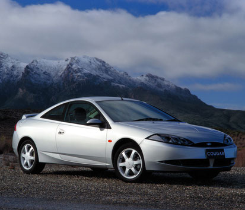
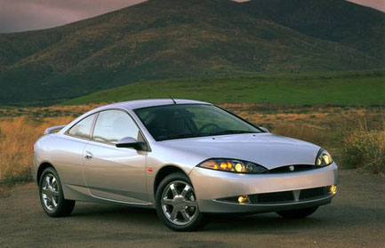

DESCRIZIONEGran Turismo 2

EUROPEAN FORD COUGAR
Sotto la radicale carrozzeria "New Edge Design" della Ford Cougar si nasconde il telaio di una modesta berlina Mondeo.
Ma non lasciamoci trarre in inganno. La Mondeo è stata considerata una delle berline più maneggevoli in Europa e la coupè Cougar, presentata nel 1998, ne ha migliorato le prestazioni.
La carrozzeria della Cougar è più rigida del 18% rispetto alla Mondeo e sia l'altezza in ordine di marcia, sia il centro di gravità sono più bassi. Le sospensioni indipendenti prevedono montanti MacPherson all'avantreno e l'esclusivo sistema Quadralink della Ford al retrotreno che consente alle ruote posteriori di partecipare alla sterzata in condizioni estreme di curva.
Grazie alla notevole compressibilità delle molle, degli ammortizzatori e delle barre stabilizzatrici, come pure al centro di gravità più basso, la Cougar ha un rollio inferiore del 20% rispetto alla cugina Mondeo.
Inoltre, i maestosi pneumatici ribassati 205/60 R15 (215/50 R16 sul modello 24v) le conferiscono una maggiore tenuta di strada.
Tra gli ausili di guida opzionali, il servosterzo variabile ad attrito ridotto, la ripartizione elettronica della frenata e i freni con ABS per garantire la massima capacità frenante, oltre al controllo della trazione per fermare le ruote che slittano in caso di brusca accelerazione.
La gamma Cougar presenta due modelli:
1. Zetec 2.0l a quattro cilindri e 16 valvole con una potenza di 130cv a 5.600 giri/min
2. Duratec 2.5l V6 e 24 valvole con una potenza di ben 170cv a 6.250 giri/min per i patiti della velocità.
E' possibile scegliere tra un cambio manuale a 5 marce o un cambio automatico a 4 marce controllato elettronicamente.
Le Cougar sono veloci, sebbene non raggiungano accelerazioni da capogiro.
La 16v accelera da 0 a 100 km/h in 9,6 secondi prima di sfrecciare a 210 Km/h, mentre la 24v ha uno sprint da 0 a 100 Km/h in 8,6 secondi (7,6 secondi effettivi) e prosegue in accelerazione sino a 225 Km/h.
Disegnata in Europa, la Cougar ha sostituito la Ford Probe, interamente americana, offrendo un coupè dal look decisamente più attraente, più pratico e più prestazionale in tutte le condizioni, più adatto dunque alle strade europee. E' stata anche messa in vendita sul mercato statunitense come Mercury.

MERCURY COUGAR (U.S.A. VERSION)
Questa piccola coupè sportiva è chiamata Mercury Cougar negli Stati Uniti e Ford Cougar negli altri mercati.
Il disegno spigoloso della carrozzeria nasconde la stessa piattaforma utilizzata anche per la Ford Contour e la Mercury Mystique negli USA e per la Ford Mondeo berlina in Europa.
Se la Mondeo è stata considerata tra le berline più maneggevoli presenti sui mercati d'Europa, la Cougar coupè, introdotta nel 1998, non è da meno.
La carrozzeria è stata irrigidita rispetto a quella delle Mondeo/Contour e sono stati abbassati sia il centro di gravità sia l'assetto di marcia, per conferire una migliore manovrabilità generale. Le sospensioni indipendenti, con montanti MacPherson al treno anteriore e l'inconfondibile sistema "Quadralink" Ford al retrotreno, hanno una taratura più rigida di quella adottata per le altre berline di famiglia. Il risultato è evidente in termini di minore rollio e maggiore tenuta in curva.
La linea delle Cougar presenta due modelli con possibilità di scelta tra motori "Zetec" da 2.0 litri, quattro cilindri e 16 valvole, 125 cv a 5.600 giri/min e 176 Nm di coppia a 4000 giri/min e motori "Duratec", da 2,5 litri V6 con 24 valvole e 170 cv a 6.250 giri/min, con 223 Nm di coppia a 4.250 giri/min.
Il V6 è particolarmente energico ed elastico. Non pecca di eccessiva potenza, nonostante il nome ("Cougar" è il nome inglese del puma, vedi Coguaro) e non offre solo morbido comfort.
Al contrario, è una coupè moderna, sportiva e ben equilibrata.